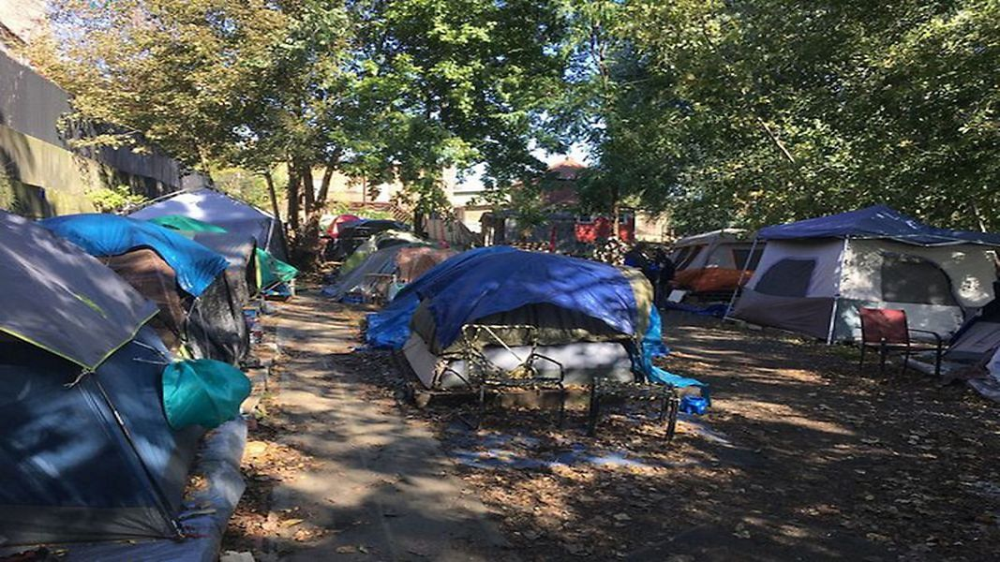

Timeline photos
Edit: One person paid this entire bill. I really can't even bare the goodness of you all. I've removed the donation ask at the bottom of this post.
I'm disappointed in myself.
I think that's how I feel about my accomplishments in helping Akron's homeless people.
I just haven't measured up. I keep losing. I can't seem to make it clear enough to anyone in power that there are people without shelter or a place to sleep.
These people, these human beings, these American citizens, have been kicked out of all the other shelters in Akron. They have been kicked out of every housing program available. They have nowhere to turn. That's why they are coming to me for tents.
It's not because I'm offering some luxurious glamping experience. (Although, that seems to be what the city thinks.)
They are begging me for tents because they have nowhere else to sleep. A tent blocks wind, rain and snow. It's a simple, yet highly effective solution to providing shelter to a human being.
I dare you to go camping in March or October without a tent or a tarp. If you don't die from exposure you likely will suffer from hyperthermia. The CDC says hypothermia "can occur even at cool temperatures (above 40°F) if a person becomes chilled from rain, sweat, or submersion in cold water.
Do you remember that time I told you how someone poured a bucket of ice-cold water in the middle of winter on Rob Pierce? He had no shelter or dry clothes at the time, and it was the middle of the night with nowhere to go. The city had shut down my camp when that happened to him.
So, last week, Summit County Pleas Court sent me, our church, and our charity a bill for $485 for court costs after the city put a permanent injunction on me to never put a tent on my private land for as long as I live (and also as long as anyone lives, because the injunction runs with the land).
But that was good news. Because their initial injunction wanted to hold ANYONE in contempt of this order if I ever gave anyone a tent anywhere in Akron. "Defendants, their officers, agents, servants, employees, attorneys, and those persons in active concert or participation with them." That's how they wrote it.
My attorney, Louicile Powers, thankfully, got rid of that madness. I'm "just" left with never being able to put a tent on my own property for all of eternity.
I don't know if this moves you to help with these court costs. But if it does you can do so here:
(It has been paid by one supporter. I've removed the donation ask. Thank you so so much.)
Thank you!